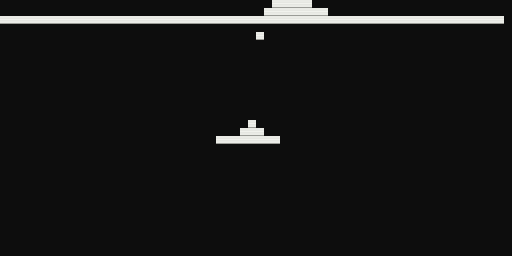
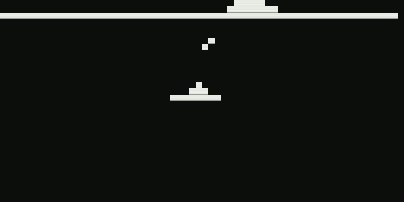
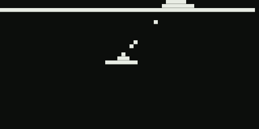

Sub
Graeme V. Samways · DREAMER no. 1 (1980-09) p. 7 1K RAM



You command a submarine hunting enemy ships on the surface, with unlimited torpedoes (one in flight at a time) and depth charges dropped on you. Every ship you sink adds its speed to your score, which is shown when the sub itself is sunk. The issue 9 variant replaces the movement code so that a four-way paddle on keys 5/8/A/D drives the sub.
Keys
Hold to move: 4/5/6 surface left/stay/right, 8/A left/right, C/D/E dive left/straight/right; fire 0 left, 1 up, 2 right. Eight-direction version: 5/8/A/D (two adjacent keys = diagonal), F fires.
Files
| File | Version | Load | Run |
|---|---|---|---|
| Sub.c8 | main | 0200-03FF | C000 |
| Sub (Eight Direction).c8 | eight-direction joystick | 0200-03FF | C000 |
Listing as transcribed (with notes): sub.txt, sub_eight_direction.txt
Source
DREAMER no. 1 on archive.org, p. 7 (PDF page 7). Author: Graeme V. Samways.
Corrections applied
- Eight-direction version: rows 0230-02BF replaced by the 'Modified Sub Listing' of issue 9 (printed rows 02B0-02BB are zeros, the rest is the issue 1 listing).
Open doubts
- Diagonal moves need two keys at once and were not tested.